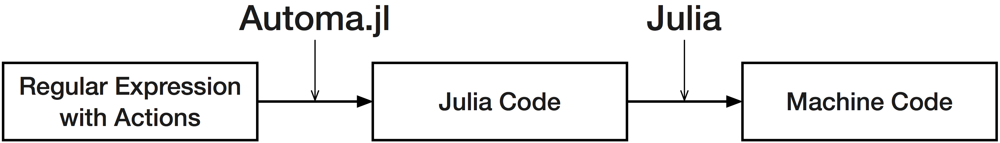

Automa.jl
Automa is a regex-to-Julia compiler. By compiling regex to Julia code in the form of Expr objects, Automa provides facilities to create efficient and robust regex-based lexers, tokenizers and parsers using Julia's metaprogramming capabilities. You can view Automa as a regex engine that can insert arbitrary Julia code into its input matching process, which will be executed when certain parts of the regex matches an input.

Automa.jl is designed to generate very efficient code to scan large text data, which is often much faster than handcrafted code. Automa.jl is a regex engine that can insert arbitrary Julia code into its input matching process, that will be executed in when certain parts of the regex matches an input.
Where to start
If you're not familiar with regex engines, start by reading the theory section, then you might want to read every section from the top. They're structured like a tutorial, beginning from the simplest use of Automa and moving to more advanced uses.
If you like to dive straight in, you might want to start by reading the examples below, then go through the examples in the examples/ directory in the Automa repository.
Examples
Validate some text is composed only of ASCII alphanumeric characters
generate_buffer_validator(:validate_alphanumeric, re"[a-zA-Z0-9]*") |> eval
for s in ["abc", "aU81m", "!,>"]
println("$s is alphanumeric? $(isnothing(validate_alphanumeric(s)))")
endMaking a lexer
tokens = [
:identifier => re"[A-Za-z_][0-9A-Za-z_!]*",
:lparens => re"\(",
:rparens => re"\)",
:comma => re",",
:quot => re"\"",
:space => re"[\t\f ]+",
];
@eval @enum Token errortoken $(first.(tokens)...)
make_tokenizer((errortoken,
[Token(i) => j for (i,j) in enumerate(last.(tokens))]
)) |> eval
collect(tokenize(Token, """(alpha, "beta15")"""))Make a simple TSV file parser
machine = let
name = onexit!(onenter!(re"[^\t\r\n]+", :mark), :name)
field = onexit!(onenter!(re"[^\t\r\n]+", :mark), :field)
nameline = name * rep('\t' * name)
record = onexit!(field * rep('\t' * field), :record)
compile(nameline * re"\r?\n" * record * rep(re"\r?\n" * record) * rep(re"\r?\n"))
end
actions = Dict(
:mark => :(pos = p),
:name => :(push!(headers, String(data[pos:p-1]))),
:field => quote
n_fields += 1
push!(fields, String(data[pos:p-1]))
end,
:record => quote
n_fields == length(headers) || error("Malformed TSV")
n_fields = 0
end
)
@eval function parse_tsv(data)
headers = String[]
fields = String[]
pos = n_fields = 0
$(generate_code(machine, actions))
(headers, reshape(fields, length(headers), :))
end
header, data = parse_tsv("a\tabc\n12\t13\r\nxyc\tz\n\n")